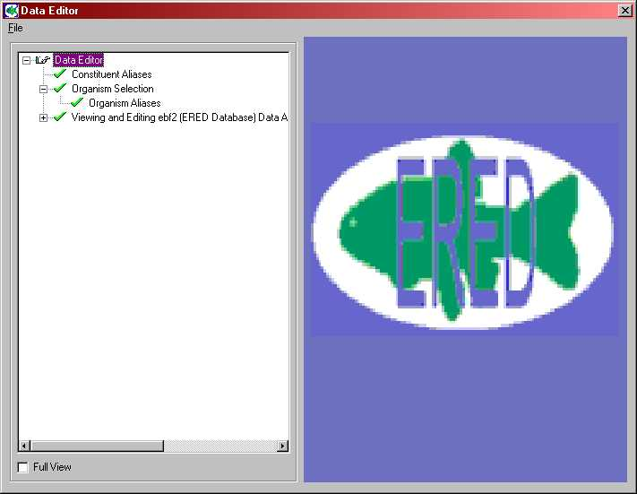
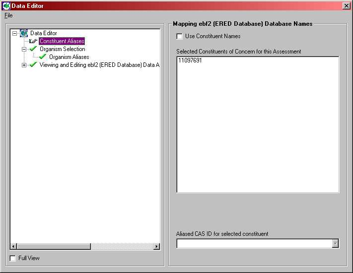
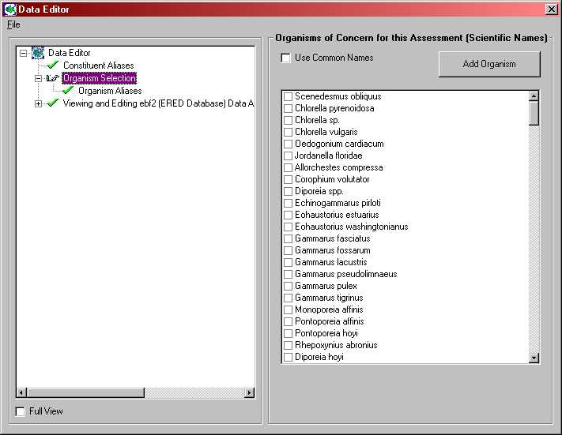
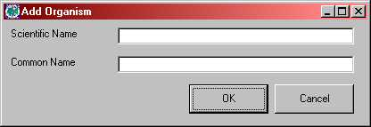
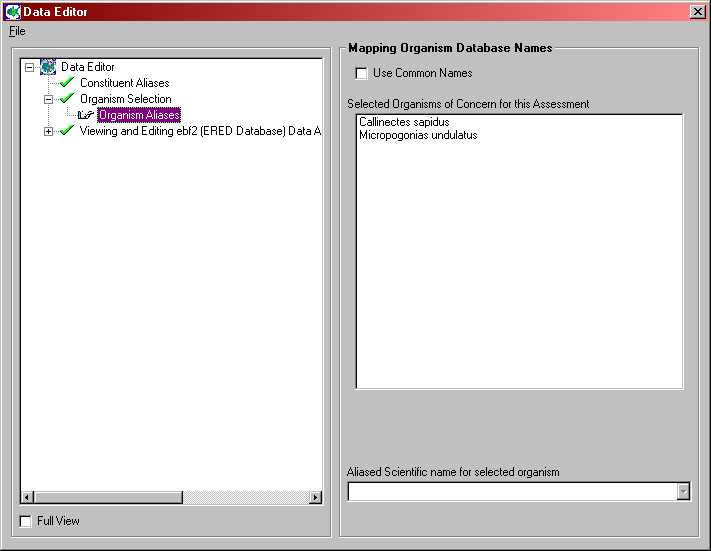
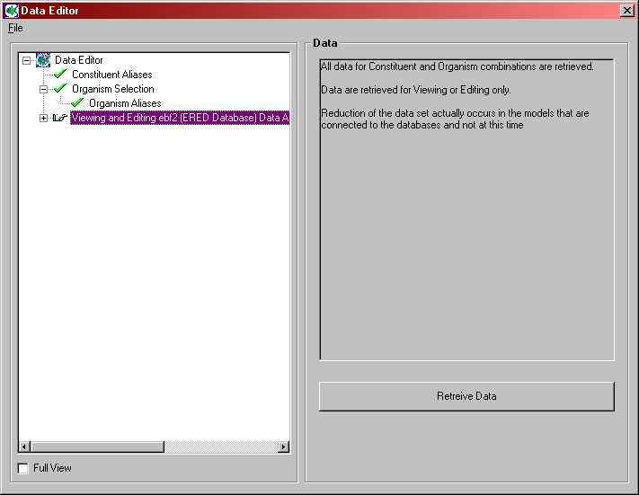
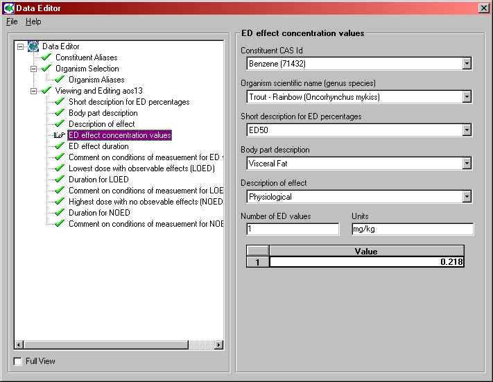

For more information about the file specification that this module produces see EBF Specifications on the FRAMES web site.
Data Editor
This module takes input from a Constituent database and extracts toxicity reference values by constituent for consumption by ecological effects and exposure modules. The sub categories in the parameter can be viewed by clicking on the '+' to the left of the parameter. See figure 1.

Figure 1
This outline selection allows the user to select consitutent alias for each of the constituents of concern. The constituents are displayed in the right-hand side of the window. The default selection is for the Cas-ID of the constituents to appear instead of their common names. To view the list of constituents by their common names, check in the window next to 'Use Common Names' on the top portion of the user-interface window. See figure 2.
When a particular consitutent is selected, its alias appears in the bottom window. For those constituents, that do not have an identifiable alias in the database, select a constituent from the drop-down list, that best resembles the characteristics of that particular constituent.
Repeat this process until an alias has been selected for all the constituents of concern.

Figure 2
Select any number of organisms for analysis by clicking in the window next to each one of those organisms. Selected lifeform will be indicated by a tick symbol in the window next to it. Similarly, to deselect a organism from the analysis, click in the window next to it. To view the list of organisms by their common names, check the box marked 'Use Common Names' in the top left hand corner of the Data Editor window. See figure 3.
For every lifeform selected, its alias also will have to be chosen from the drop-down list in the bottom portion of the user-interface window. Some lifeforms may not have a matching alias. If so select an organism from the list, that best resembles in physical characteristics to the selected species. Repeat this process for all the selected lifeforms.

Figure 3
To add an organism that is not available in the database, click on the 'Add Organism' in the right-hand corner of the user-interface screen. See figure 4. Type the scientific name and common name of the organism and click ok. Any number of lifeforms can be added by this process.

Figure 4
This outline selection allows the user to select organism alias for each of the organisms of concern. The organisms are displayed in the right-hand side of the window. The default selection is for the scientific names of the organisms to appear instead of their common names. To view the list of organisms by their common names, check in the window next to 'Use Common Names' on the top portion of the user-interface window. See figure 5.
When a particular organism is selected, its alias appears in the bottom window. For those organisms, that do not have an identifiable alias in the database, select an organism from the drop-down list, that best resembles the characteristics of that particular organism.
Repeat this process until alias has been selected for all the organisms of concern.

Figure 5
Click on Retrieve Data, in the Viewing and Editing EBF Data tab, to complete the assessment of the chemical and lifeform combinations.

Figure 6
Viewing and Editing EBF Data
Units: See units field in figure 7.
Range: Parameter specific
Click on the '+' next to this parameter, to get a tree-view of the list of data that can be edited or viewed. A data editor window will appear on the right-hand side, when a particular data title from the tree-view is selected. See figure 5. Data can be edited for as many parameters as needed.

Figure 7